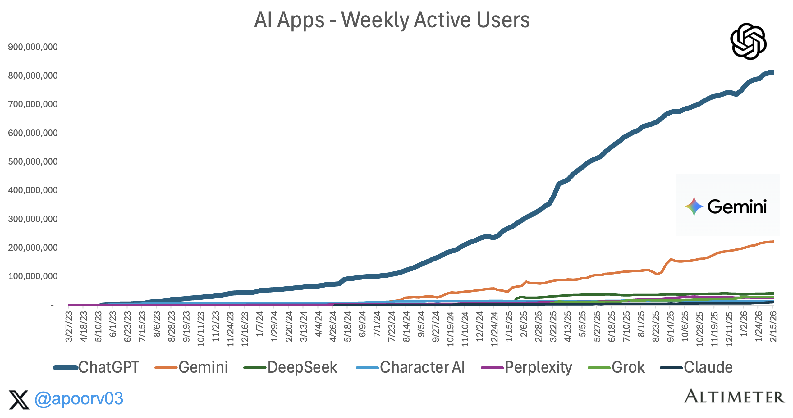
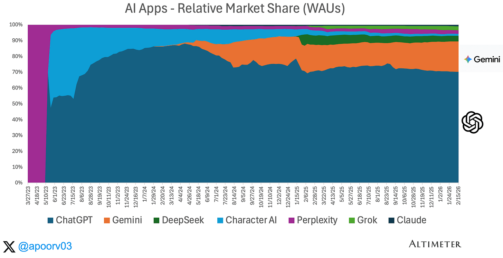
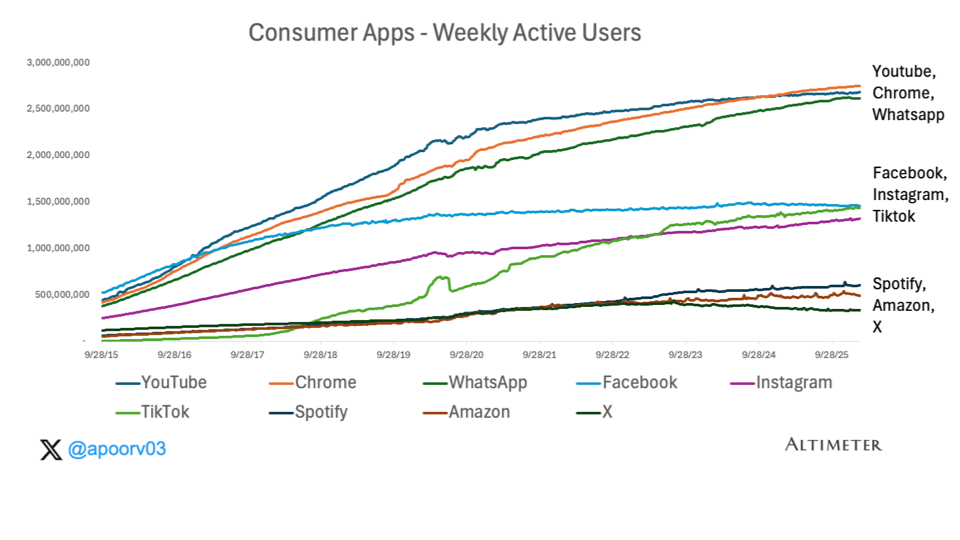
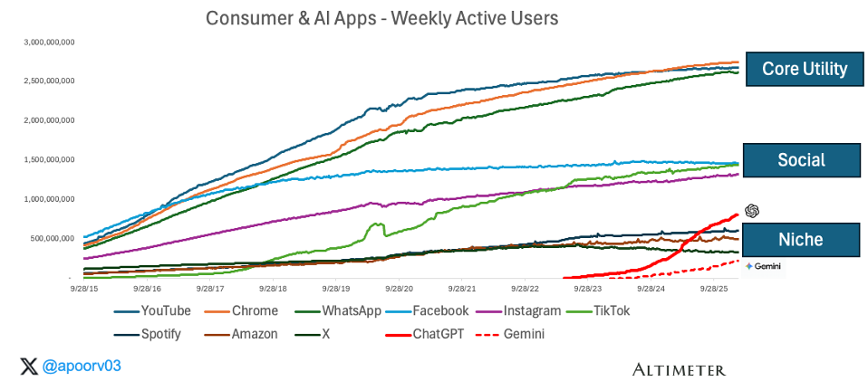
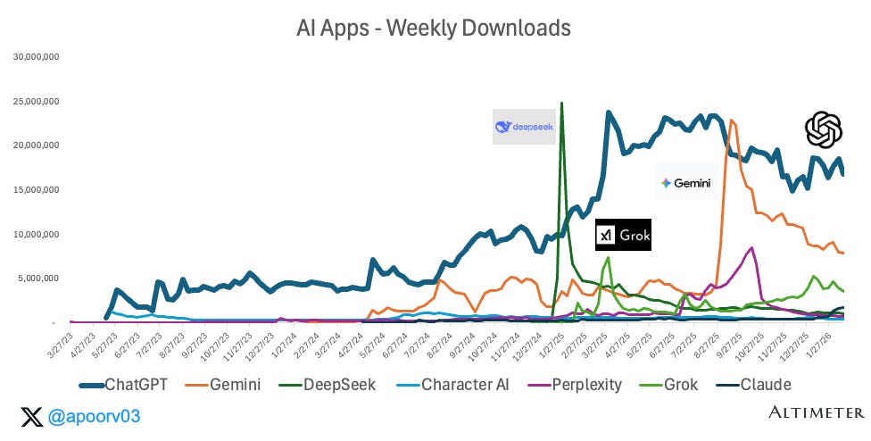

两年前，我曾提出消费级AI正走向一个熟悉的终局：分发渠道将胜过原始模型质量，因此谷歌和Meta等现有巨头最具优势。那时，ChatGPT大约有1亿周活跃用户。
这场争论已经尘埃落定。我错了。
如今，AI应用已突破10亿周活跃用户，仅ChatGPT就占其中的9亿。它是从零开始建立的用户基础，没有任何现成的分发平台。下面我将通过分析各应用的使用数据来说明：ChatGPT是唯一一款既拥有庞大安装基础、又具备新用户增长动力的AI应用，有望成为像今天的WhatsApp和Chrome那样的核心工具。其他所有挑战者浪潮都已消退。ChatGPT则在持续积累。
这是多篇系列文章的第一部分，聚焦于使用量。参与度、留存率和用户使用时长将在后续讨论。我从四个维度分析使用量：
目录
- 1. ChatGPT在双雄AI竞赛中一骑绝尘
- 2. ChatGPT vs. 消费级巨头：比你想象的更接近
- 3. AI的四季：OpenAI、Google、xAI、中国
- 4. 在AI应用中，只有ChatGPT看起来像可行的新工具

1. ChatGPT在双雄AI竞赛中一骑绝尘
来源：Sensortower
方法论说明：数据来源为Sensortower，因此本分析仅涵盖移动端，可能低估了以网页端为主的AI使用量。我选择周活跃用户数（WAU），因为它是日活跃用户数（DAU）和月活跃用户数（MAU）之间的有效折中，也是比较新兴AI产品与成熟消费应用的合理方式。
AI应用的总WAU已从2024年1月的约1亿增长至2026年2月的超过12亿。这是两年间约20倍的增长。历史上没有任何应用类别扩张得如此之快。

ChatGPT拥有9亿WAU，超过了Spotify的约6亿，与TikTok（约15亿）和Instagram（约13亿）处于同一量级，并正在逼近我视为核心工具的WhatsApp和Chrome（各约25亿）。当我撰写最初那篇文章时，ChatGPT在消费级巨头面前还微不足道。而现在它已跻身同一梯队。大多数人，包括我自己，都曾以为这需要更长时间。
来源：Sensortower
ChatGPT占据了AI应用总WAU约70%的份额，并且在过去一年中一直保持这一水平。Gemini约占15-20%。其他所有应用（DeepSeek、Grok、Perplexity、Claude、Character AI）合计约占10%。
AI类别增长了20倍，但几乎全部增长都流向了两个应用。ChatGPT从零开始建立用户基础，没有任何现成的分发平台。而Gemini则依靠谷歌40亿用户的庞大分发网络。
2. ChatGPT vs. 消费级巨头：比你想象的更接近

要理解AI应用的定位，有必要看看过去十年消费应用的分层状况。
消费应用的使用量已稳定在三个层级：
核心工具（约20-30亿WAU）：YouTube、Chrome、WhatsApp。这些是基础设施。它们如此深入地嵌入日常生活，以至于更像是操作系统功能而非独立产品。增长缓慢而稳定，主要由智能手机渗透率驱动，而非病毒式传播。
社交平台（约10-15亿WAU）：Facebook、Instagram、TikTok。由内容图谱和社交强化驱动的习惯性应用。它们花了多年时间才攀升到这一层级，增长已基本见顶。
垂直应用（约3-6亿WAU）：Spotify、Amazon、X。服务于更特定需求的类别领导者，拥有庞大的用户基础，使用频繁但并非人人必备。
AI已不再仅仅是一类与自己比较的类别。它现在与有史以来最大的消费产品同列一张图表：

ChatGPT以8-9亿WAU跨越了垂直层级，正在向社交层级迈进。它用了大约三年时间达到这一水平，而Instagram用了五年，TikTok用了四年。Gemini约2亿WAU，正在从下方进入"垂直"层级。
3. AI的四季：OpenAI、Google、xAI、中国
WAU图表讲述的是集中的故事。下载量图表讲述的则是混乱的故事。

过去一年中，每个季度都有不同的挑战者成为焦点，各自乘着炒作浪潮、产品发布或分发渠道优势。可以将其视为AI下载量的四个季节：
2025年冬季：中国。DeepSeek在2025年1月周下载量暴增至超过2500万，一度与ChatGPT的数据相匹敌。这款开源模型的性能打了行业一个措手不及，引发了一波"OpenAI有麻烦了？"的评论。数周内，下载量回落到峰值的一小部分。
2025年春季：xAI。Grok在Q1及Q2期间借助Elon Musk通过X平台的分发优势和一系列模型更新迎来增长高峰。下载量激增，媒体争相报道。但持续的使用量从未达到同等规模。
2025年夏季：Google。Gemini的高光时刻。周下载量激增至超过2000万，主要受"纳米香蕉"模型推动——谷歌在I/O大会前后发布的病毒式图像生成功能。这一增长几乎完全与图像生成相关，这也解释了随后的回落：这是一个模型时刻，而非持续的行为转变。谷歌的分发引擎可能放大了传播范围，但催化剂是拥有一个真正优秀的、能引发病毒式分享的图像模型。
每个季度：OpenAI。贯穿始终的是，ChatGPT在持续积累。每个挑战者都曾占据头条一个季度，但ChatGPT的下载量始终稳定在或接近顶峰，周复一周，毫无波动。图表上那条平稳的线，才是真正重要的。
荣誉提名：Anthropic。截至撰写本文时，Claude已成为App Store免费应用第一名。这究竟是又一个季度性波动，还是更持久的趋势，值得关注。但此前的模式已经很清楚：吸引关注相对容易，而培养日常习惯则很难。
模式很清晰。每个季度都会产生一个新的"ChatGPT威胁论"叙事。每一个都逐渐消退。下载量因炒作而激增。使用量则流向那些赢得日常习惯的应用。
4. 在AI应用中，只有ChatGPT看起来像可行的新工具
我通过"存量与流量"的视角来思考消费应用。存量是你当前的用户基础。流量是新下载量。将两者绘制成图，就能清晰看到发展势头：
来源：Sensortower
这张散点图展示了最终结果。ChatGPT占据的位置，在消费应用中只有核心工具应用（WhatsApp、YouTube和Chrome）和主流社交应用（TikTok、Instagram和Facebook）才能企及：庞大的现有用户基础加上高下载流量。Gemini获得了可观的下载量，但尚未将其转化为可比的安装基础。其他AI应用则聚集在左下角：基础小，下载量也有限。
除非发生剧变，否则ChatGPT是唯一一条通往"核心工具"之路的AI应用。
结论
AI应用已突破10亿周活跃用户。ChatGPT占据其中70%的份额，并且是唯一一款达到真正消费互联网规模的AI应用，在约三年内从零达到8-9亿WAU，没有任何现成的分发平台。
谷歌是真实但遥远的存在。Gemini以2-2.5亿WAU是唯一另一款将下载量转化为持久使用的AI应用，主要依靠Android、搜索和40亿现有用户。其他应用都无法望其项背。
但并非所有使用量都是同等的。在第二部分中，我们将研究参与度——ChatGPT在DAU:MAU比率、留存率和用户使用时长上的领先优势更为显著。
在消费市场中，一旦一个产品同时拥有了安装基础和新增用户流量，默认的结局就是进一步集中。ChatGPT两者兼备。现在的问题是，这种使用量是否正在深化为真正的习惯，还是仍然像人们短暂访问然后离开的工具。这才是真正的战场。